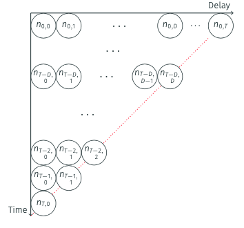
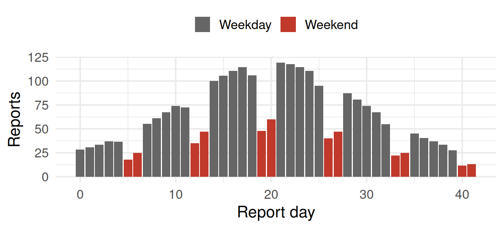
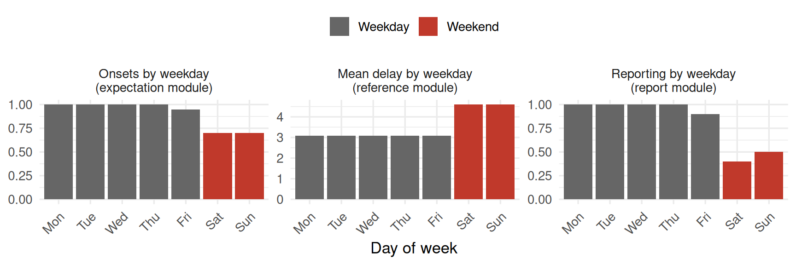
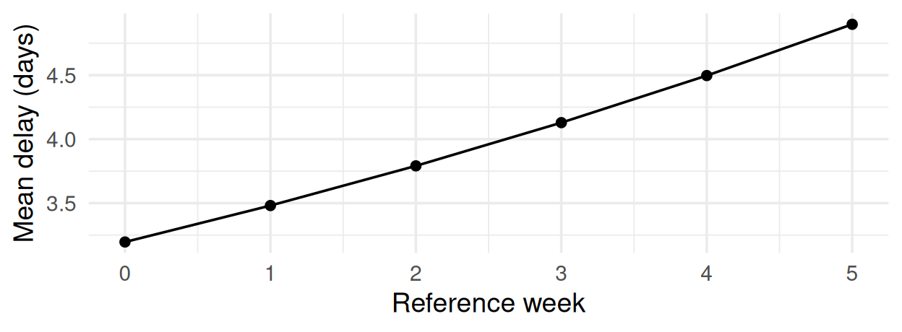

In the joint nowcasting session we modelled each cell of the reporting triangle as
\[ n_{t,d} \mid \lambda_{t}, p_{t,d} \sim \text{Poisson}\left(\lambda_{t} \times p_{t,d}\right) \]
Ideal for learning, and fine when the reporting process is simple.

A single, fixed delay cannot capture:

To add a day-of-week effect and a time-varying delay by hand:
transformed parameters, slower gradients, more to testepinowcast: one flexible toolepinowcast is a Bayesian framework for real-time surveillance.
Tip
If you understand the joint nowcasting session, you already understand what epinowcast is doing, just with more flexible components.
The expectation, reference and observation modules mirror what we built by hand. The report date module is new and handles effects on the report date, such as day-of-week reporting. The missing data module is also new and handles reports with an unknown reference date.
| Bespoke model | epinowcast module |
|---|---|
| \(\lambda_{t}\) random walk | enw_expectation(~ 0 + (1 | day)) |
| \(p_{t,d}\) delay distribution | enw_reference(~ 1) |
| report-date effects | enw_report(~ ...) |
| Poisson likelihood | enw_obs(family = "poisson") |
Note
The enw_expectation() formula acts on the daily growth rate, so a random effect by day gives a geometric random walk on the expected counts.
A weekly pattern can enter in three distinct places:

Delays may lengthen under strain and shorten with spare capacity.

Data are often reported weekly even though events happen daily.
enw_reference(~ (1 | age_group)), own delay per stratum, partial pooling across strataenw_missing() moduleNote
epinowcast is one tool among several. Models written using Stan directly, baselinenowcast benchmarks, and other frameworks all have their place. The right choice depends on the problem.
epinowcastModelling complex reporting processes